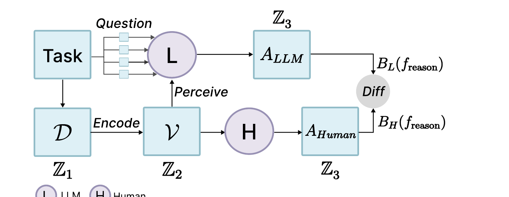
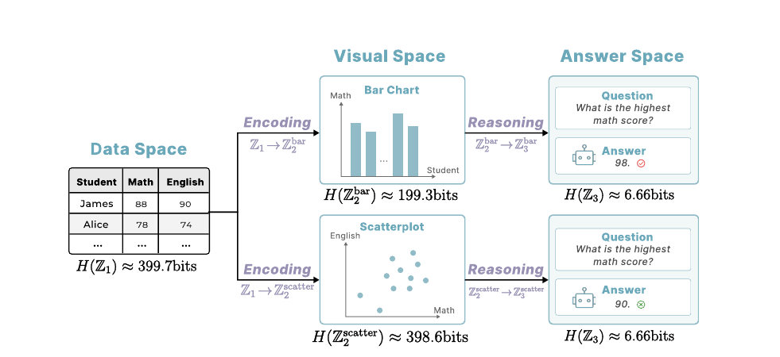
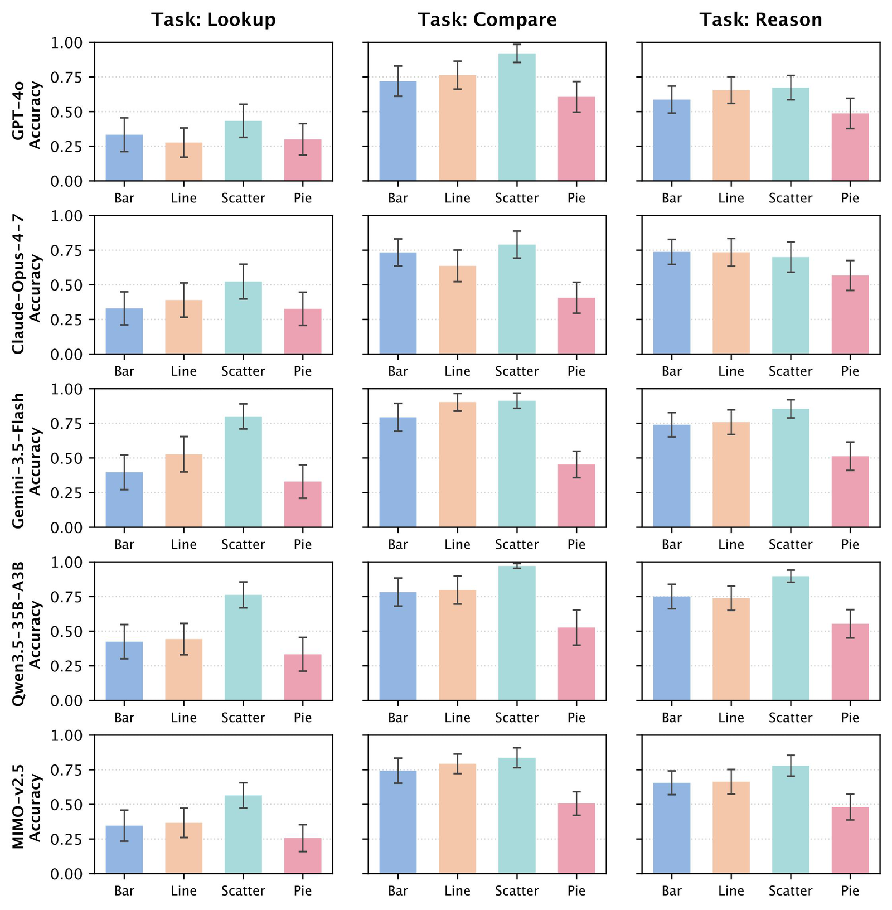
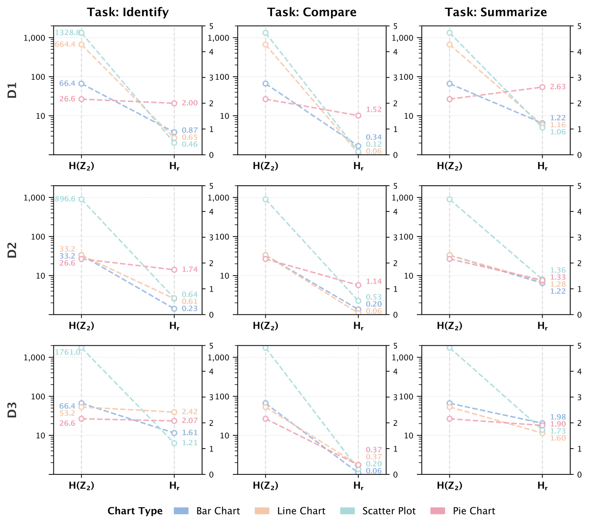

Agentic visualization systems serve both human analysts and AI agents powered by large language models (LLMs). Existing evaluations for visualizations predominantly adopt the human user perspective, or assess LLM agents by accuracy alone. However, a common language for comparing human and LLM agents in agentic visualization workflows remains limited. To fill the gap, we propose an information-theoretic framework that models the agentic visualization pipeline as a two-stage process of encoding and reasoning, and characterize information transformation at each stage using entropy-based measures. We instantiate the framework with experiments on the reasoning stage across five multimodal LLMs, four chart types, and three task categories. The results show that reasoning effectiveness depends on the compatibility between visual encoding and the agent's ability to reconstruct task-relevant information. The essential factor is not how much information a visualization preserves, but whether the LLM can reliably decode it. These findings inform future work on improving LLM visual reasoning and task allocation between human and AI agents.


An example of information transformation from data to visual and answer spaces, using a bar chart (top) and a scatterplot (bottom).

Accuracy across five multimodal models (rows) and three task categories (columns); scatterplots lead while pie charts lag.

Parallel-coordinate view of the entropy translation from visual encoding H(Z2) to empirical reasoning entropy Hr.
If you find this paper useful, please consider citing it.
@article{wang_2026_infotrans,
author = {Zhan Wang and Wei Zeng},
title = {Modeling Information Transformation in Agentic Visualization: An Information-Theoretic Analysis},
journal = {Visual Informatics},
year = {2026},
}